정보처리산업기사 (2004-09-05 기출문제)
1과목: 데이터 베이스
1. 데이터베이스의 개념적 설계를 위해 사용되는 E-R 모델에 관한 설명으로 옳지 않은 것은?
- 개념 세계에서는 현실 세계에 대한 인식을 추상적 개념으로 표현하는데, 이 과정을 데이터 모델링이라 한다.
- 정보 모델링을 통하여 얻어진 결과를 정보 구조화라 한다.
- 정보 구조를 구성하는 추상적 개념은 현실 세계의 객체에서 추상화된 개체(entity) 집합이다.
- 각 개체 집합은 여러 개의 속성으로 표현되며, 각 속성은 현실 세계의 객체들이 갖는 특성이다.
(정답률: 45%)

2. SQL 언어의 질의 기능에 대한 설명 중 옳지 않은 것은?
- SELECT 절은 질의 결과에 포함될 데이터 행들을 기술하며 이는 데이터베이스로 부터의 데이터 행 또는 계산 행이 될 수 있다.
- FROM 절은 질의에 의해 검색될 데이터들을 포함하는 테이블을 기술한다.
- 복잡한 탐색조건을 구성하기 위하여 단순 탐색조건들을 AND, OR, NOT으로 결합할 수 있다.
- ORDER BY 절은 질의 결과가 한 개 또는 그 이상의 열 값을 기준으로 올림차순 또는 내림차순으로 정렬될 수 있도록 기술된다.
(정답률: 50%)
3. 데이터베이스 관리 시스템(DBMS)의 필수기능 중 제어 기능에 대한 설명으로 거리가 먼 것은?
- 데이터베이스를 접근하는 갱신, 삽입, 삭제 작업이 정확하게 수행되어 데이터의 무결성이 유지되도록 제어해야 한다.
- 데이터의 논리적 구조와 물리적 구조 사이에 변환이 가능하도록 두 구조 사이의 사상(Mapping)을 명시하여야 한다.
- 정당한 사용자가 허가된 데이터만 접근할 수 있도록 보안(Security)을 유지하고 권한(Authority)을 검사할 수 있어야 한다.
- 여러 사용자가 데이터베이스를 동시에 접근하여 데이터를 처리할 때 처리 결과가 항상 정확성을 유지하도록 병행 제어(Concurrency Control)를 할 수 있어야 한다.
(정답률: 63%)
4. 논리적 데이터 모델 중 오너-멤버(owner-member) 관계를 가지는 것은?
- E-R 모델
- 관계 데이터 모델
- 계층 데이터 모델
- 네트워크 데이터 모델
(정답률: 75%)
5. 다른 관계에 존재하는 튜플을 참조하기 위해 사용되는 속성의 값은 참조되는 테이블의 튜플 중에 해당 속성에 대해 같은 값을 갖는 튜플이 존재해야 한다는 제약은?
- 개체무결성 제약
- 주소무결성 제약
- 참조무결성 제약
- 도메인 제약
(정답률: 77%)
6. 기억 공간의 낭비 원인이 되는 널 링크 부분을 트리 순회시 이용되도록 구성한 트리를 무엇이라고 하는가?
- 신장 트리(spanning tree)
- 스레드 이진 트리(thread binary tree)
- 완전 이진 트리(complete binary tree)
- 경사 트리(skewed tree)
(정답률: 60%)
7. 보기와 같은 그래프에서 인접행렬이 옳게된 것은?
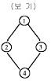
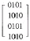
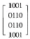
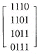
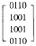
(정답률: 61%)
8. 관계 데이터 모델에서 하나의 애트리뷰트가 취할 수 있는 같은 타입의 원자(atomic) 값 들의 집합을 무엇이라 하는가?
- 속성
- 스킴
- 도메인
- 제약조건
(정답률: 76%)
9. 선형 자료 구조에 해당되지 않는 것은?
- 스택(stack)
- 큐(queue)
- 트리(tree)
- 데크(deque)
(정답률: 91%)
10. A person responsible for the design and management of the database and for deciding the storage and access strategy. Who is this?
- System analyzer
- DBA
- Programmer
- Custom engineer
(정답률: 83%)
11. E-R 다이어그램에서 보기의 표현은 어떤 요소를 나타내는가?
- 개체
- 관계
- 항목
- 속성
(정답률: 73%)
12. 자기테이프에서 레코드의 크기는 10이고, 블록의 크기가 200인 경우 blocking factor는?
- 2
- 20
- 200
- 2000
(정답률: 63%)
13. Choose a sentence which dosen't explain the advantages from using DBMS.
- Redundancy can be reduced.
- Consistency can be avoided.
- The data can be shared.
- Security restrictions can be applied.
(정답률: 38%)
14. 데이터베이스에서 아직 알려지지 않거나 모르는 값으로서 "해당 없음" 등의 이유로 정보 부재를 나타내기 위해 사용하는 특수한 데이터 값을 무엇이라 하는가?
- 원자값(atomic value)
- 참조값(reference value)
- 무결값(integrity value)
- 널값(null value)
(정답률: 95%)
15. 데이터베이스관리자(DBA)의 역할에 대한 설명으로 거리가 먼 것은?
- 데이터베이스의 스키마를 정의한다.
- 데이터베이스의 저장구조 및 접근 방법을 정의한다.
- 사용자들에게 데이터베이스의 접근 권한을 부여한다
- 응용 프로그램을 통하여 데이터베이스를 접근한다.
(정답률: 67%)
16. SQL에서 관계형 모델의 릴레이션을 테이블로 생성하는데 사용하는 명령어는?
- DEFINE
- ALTER
- CREATE
- MAKE
(정답률: 89%)
17. 스택을 이용한 응용 분야로 적합하지 않은 것은?
- 인터럽트 처리
- 함수호출의 순서제어
- 작업 스케줄링
- 수식의 계산
(정답률: 73%)
18. 다음 질의문 실행의 결과는?
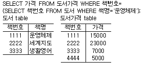
- 5000
- 7000
- 15000
- 23000
(정답률: 87%)
19. 다음 설명이 의미하는 것은?
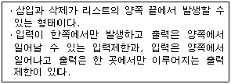
- 스택
- 큐
- 다중스택
- 데크
(정답률: 71%)
20. 데이터베이스 설계 단계의 순서로 옳은 것은?
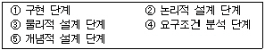
- ④-⑤-②-③-①
- ①-②-③-④-⑤
- ④-②-⑤-③-①
- ④-③-⑤-②-①
(정답률: 87%)
2과목: 전자 계산기 구조
21. 음수를 2의 보수로 표현할 때, 8비트로 나타낼 수 있는 정수의 범위는?
- -27 ~ +27
- -28 ~ +28
- -27 ~ +27-1
- -27-1 ~ +27
(정답률: 65%)
22. 단항 연산자(Unary operation)가 아닌 것은?
- ROTATE
- COMPLEMENT
- AND
- SHIFT
(정답률: 65%)
23. 이웃하는 코드가 한 비트만 다르기 때문에 코드 변환이 용이해서 A/D 변환에 주로 사용되는 코드는?
- Gray code
- Hamming code
- Excess-3 code
- Alphanumeric code
(정답률: 62%)
24. 소프트웨어적인 인터럽트 요구 장치 판별법은?
- 벡터 인터럽트
- 폴링
- 스택
- 핸드쉐이킹
(정답률: 62%)
25. 넌웨이티드 코드(Non-weighted code)는?
- 51111 코드
- 2421 코드
- 8421 코드
- 3초과 코드
(정답률: 53%)
26. 데이터 통신 및 마이크로컴퓨터에서 많이 채택되고 있는 코드는?
- BCD 코드
- Hamming 코드
- EBCDIC 코드
- ASCII 코드
(정답률: 66%)
27. 컴퓨터에서 사용되는 명령어들을 기능별로 분류할 때 분류 기준에 포함되지 않는 것은?
- 함수 연산 기능
- 주소계산 기능
- 전달 기능
- 입출력 기능
(정답률: 58%)
28. 프로그램 카운터가 명령의 번지 부분과 더해져서 유효번지가 결정되는 주소 지정 방식은?
- 상대 번지 모드(mode)
- 간접 번지 모드 (mode)
- 인덱스드 어드레싱 모드(indexed addressing mode)
- 베이스(base) 레지스터 어드레싱 모드
(정답률: 46%)
29. X=(A+B)(AㆍB)‘와 같은 것은?
- A+B‘
- A‘B+AB’
- A+B
- A‘+B
(정답률: 62%)
30. 다음 logic diagram의 Boolean expression은?
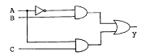
- y=A‘B+AC
- y=A‘BC
- y=AB‘+C
- y=A‘+B+C
(정답률: 64%)
31. CPU의 명령어 사이클 4단계에 해당되지 않는 것은?
- Fetch Cycle
- Control Cycle
- Indirect Cycle
- Interrupt Cycle
(정답률: 54%)
32. 다음은 십진수를 표현하는 이진코드(binary code)들이다. 이들 중 자체 보수화(self - complementary)가 불가능한 코드는?
- BCD(8421) 코드
- Excess-3 코드
- 51111 코드
- 2421 코드
(정답률: 35%)
33. 일반적인 컴퓨터의 CPU 구조 가운데 처리할 수식을 미리 처리되는 순서인 역 polish(또는 postfix) 형식으로 바꾸어야 하는 CPU 구조는?
- 범용 레지스터 구조 CPU
- 단일 누산기 구조 CPU
- 스택 구조 CPU
- 모든 CPU 구조
(정답률: 63%)
34. 접근 시간(access time)을 옳게 나타낸 것은?
- 접근시간 = 탐색시간 + 대기시간 + 전송시간
- 접근시간 = 탐색시간 + 대기시간 + 실행시간
- 접근시간 = 탐색시간 + 대기시간
- 접근시간 = 탐색시간 + 실행시간
(정답률: 32%)
35. 2진수 1010을 그레이(Gray) 코드로 변환한 것으로 옳은 것은?
- 1111(G)
- 1001(G)
- 1011(G)
- 1101(G)
(정답률: 60%)
36. 인터럽트의 발생 원인이 아닌 것은?
- 정전
- 서브 프로그램 호출
- 오버플로우(overflow) 발생
- 오퍼레이터(operator)의 조작
(정답률: 60%)
37. 전자계산기에서 어떤 특수한 상태가 발생하면 그것이 원인이 되어 현재 실행하고 있는 프로그램이 일시 중단되고, 그 특수한 상태를 처리하는 프로그램으로 옮겨져 처리한 후 다시 원래의 프로그램을 처리하는 현상은?
- 인터럽트
- 다중처리
- 시분할 시스템
- 다중 프로그램
(정답률: 84%)
38. 중앙연산처리 장치에서 마이크로 동작(Micro-operation)이 순서적으로 일어나게 하는데 필요한 신호는?
- 실행 신호
- 순차 신호
- 제어 신호
- 타이밍 신호
(정답률: 60%)
39. 컴퓨터의 주기억 장치는?
- ROM과 RAM
- DISK
- TTY
- Magnetic tape
(정답률: 77%)
40. 메모리 용량이 총 4096워드이고, 1워드가 8비트라 할 때 PC(program counter)와 MBR(memory buffer register)의 비트 수를 올바르게 나타낸 것은?
- PC = 8비트, MBR = 12비트
- PC = 12비트, MBR = 8비트
- PC = 8비트, MBR = 8비트
- PC = 12비트, MBR = 12비트
(정답률: 60%)
3과목: 시스템분석설계
41. 자료 흐름도(DFD)에 대한 설명으로 옳지 않은 것은?
- 도형 중심의 표현
- 상향식 분할의 표현
- 자료 흐름 중심의 표현
- 구조적 분석용 문서화 도구
(정답률: 76%)
42. 코드 설계 순서로 옳은 것은?
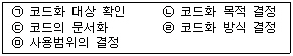
- (ㄱ)(ㄴ)(ㄹ)(ㅁ)(ㄷ)
- (ㄱ)(ㄴ)(ㅁ)(ㄹ)(ㄷ)
- (ㄴ)(ㄱ)(ㅁ)(ㄹ)(ㄷ)
- (ㄴ)(ㄱ)(ㄹ)(ㅁ)(ㄷ)
(정답률: 27%)
43. 파일매체를 선정하기 위한 기능 검토시 검토하는 사항이 아닌 것은?
- 처리방식의 검토
- 정보량의 검토
- 항목의 명칭 및 문자구분, 배열검토
- 파일의 갯수 및 사용 빈도의 검토
(정답률: 53%)
44. 코드화의 기능이 아닌 것은?
- 오류검출 및 정정 기능
- 암호화 기능
- 표준화 기능
- 분류 및 식별 기능
(정답률: 52%)
45. 시스템 개발 단계의 순서를 옳게 나열한 것은?
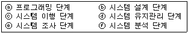
- ⓐⓑⓒⓓⓔⓕ
- ⓔⓕⓑⓐⓒⓓ
- ⓔⓑⓐⓒⓕⓓ
- ⓔⓑⓐⓕⓒⓓ
(정답률: 57%)
46. HIPO 다이어그램을 구성하고 있는 요소가 아닌 것은?
- 도형 목차
- 총괄 도표
- 자료 사전
- 상세 도표
(정답률: 67%)
47. 입력 매체인 종이테이프 또는 펀치 카드 상의 데이터를 자기디스크에 수록하는 처리는 프로세스의 표준 패턴 중 어디에 해당하는가?
- 분류(sorting)
- 병합(merge)
- 매체변환(conversion)
- 대조(matching)
(정답률: 68%)
48. 출력 시스템과 입력 시스템이 일치된 것으로 일단 출력된 정보가 이용자의 손을 거쳐 다시 입력되는 시스템의 형태는?
- Display 출력 시스템
- Turn Around System
- File 출력 시스템
- COM(Computer output Microfilm) 시스템
(정답률: 81%)
49. 경리 장부 처리시 차변, 대변의 한계 값을 체크하는데 사용하는 방법으로 대차의 균형이나 가로, 세로의 합계가 일치하는가를 체크하는 방법은?
- Limit check
- Matching check
- Balance check
- Batch total check
(정답률: 63%)
50. 시스템은 운영 중에 고장이 발생할 수 있다. 얼마나 고장 시간이 짧은가를 통해 시스템의 신뢰도를 구할 수 있는데 만일, 전체 시스템 운영 시간이 10 이고, 이중 가동시간이 6, 고장시간이 4라면 이 시스템의 신뢰도는?
- 1
- 0.6
- 0.4
- 0
(정답률: 66%)
51. 우리나라 주민등록번호의 코드 체크 방식은?
- 패리티 체크(parity check)
- 발란스 체크(balace check)
- 체크 디지트 체크(check digit check)
- 에코 체크(echo check)
(정답률: 67%)
52. 모듈로 구성된 시스템이 가지는 특징과 거리가 먼 것은?
- 효율적으로 메모리를 유용하게 사용할 수 있다.
- 프로그램 코딩의 양을 늘릴 수 있다.
- 모듈의 재사용이 가능하다.
- 여러 개발자가 분담하여 독립적으로 작성할 수 있다.
(정답률: 49%)
53. 입력정보 설계의 절차를 순서대로 나열한 것은?
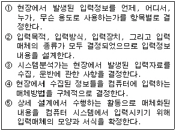
- ①→②→③→④→⑤
- ①→③→④→⑤→②
- ③→①→②→④→⑤
- ①→④→③→⑤→②
(정답률: 47%)
54. 예를 들어 "자동차"와 "말"이라는 클래스(Class)에서 "이동수단"이라는 클래스를 만드는 일을 무엇이라 하는가?
- Instance
- Specialization
- Inheritance
- Abstraction
(정답률: 40%)
55. 시스템 문서화에 대한 설명 중 틀린 것은?
- 시스템 문서화의 목적은 개발 후의 시스템 유지 보수의 용이함을 위해서이다.
- 시스템 문서화는 시스템의 기술적 타당성을 검토하는데 필요하다.
- 시스템 문서의 표준화는 효율적인 의사소통에 있다.
- 시스템 문서화는 매체를 통한 저장 파일로만 정보를 보관할 경우 담당자가 육안으로 확인할 수 없기 때문에 문서화한다.
(정답률: 34%)
56. 통계 처리나 파일의 자료에 잘못이 발생하였을 때 파일을 원상 복구하기 위해 사용되는 파일로서, 현재까지 변화된 정보를 포함하는 것으로 기록 파일이라고도 하는 것은?
- 마스터 파일(master file)
- 히스토리 파일(history file)
- 집계 파일(summary file)
- 트레일러 파일(trailer file)
(정답률: 72%)
57. 색인순차편성(ISAM) 파일에 대한 특징이 아닌 것은?
- 순차처리와 임의처리가 모두 가능하다.
- 레코드의 추가 삭제시 파일 전체를 복사할 필요가 없다.
- 어느 특정 레코드 접근시 인덱스에 의한 처리로 직접 편성 파일에 비해서 접근 시간이 빠르다.
- 오버플로우 되는 레코드가 많아지면 사용 중에 파일을 재편성하는 문제점이 발생된다.
(정답률: 37%)
58. 프로그램 설계서 작성으로 인한 기대효과와 거리가 먼 항은?
- 프로그래머의 인사 이동시 결함을 방지할 수 있다.
- 시스템의 수정, 변경, 유지보수가 간단하게 이루어진다.
- 비용이 절감되며, 장기계획을 수립할 수 있다.
- 컴퓨터의 기종 변경시 프로그램의 생산성이 떨어진다.
(정답률: 79%)
59. 시스템의 5가지 기본 요소 중 아래와 같은 특징을 갖는 것은?
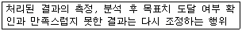
- 입력(input)
- 제어(control)
- 피드백(feedback)
- 처리(process)
(정답률: 79%)
60. 자료 입력 방식 중 발생한 데이터를 전표 상에 기록하고 일정한 시간 단위로 일괄 수집하여 입력 매체에 수록하는 입력 방식은?
- 회귀 데이터 시스템
- 집중 매체화 시스템
- 분산 매체화 시스템
- 직접 입력 시스템
(정답률: 69%)
4과목: 운영체제
61. 교착상태(DEAD LOCK) 발생의 필요조건이 아닌 것은?
- MUTUAL EXCLUSION
- PREEMPTION
- CIRCULAR WAIT
- HOLD & WAIT
(정답률: 62%)
62. 분산처리 시스템에서 노드들의 물리적인 연결 형태를 위상(topology)이라고 하며, 연결 형태에 따라 여러 가지로 분류할 수 있다. 연결 형태의 설명이 옳지 않은 것은?
- 완전 연결(fully connected) 구조 - 각 노드가 시스템 내의 모든 다른 노드와 직접 연결된 형태
- 성형(star) 구조 - 임의의 중심 노드가 다른 모든 노드와 완전 연결되어 있는 형태
- 환형(ring) 구조 - 각 노드가 서로 다른 방향의 노드와 물리적으로 연결되어 링을 구성한 형태
- 다중접근 버스(multi-access bus) 구조 - 여러 개의 공유버스를 통해 직선 또는 환형 구조로 각 노드가 서로 연결된 형태
(정답률: 49%)
63. HRN 스케줄링 방식의 특징으로 옳지 않은 것은?
- 비선점 스케줄링 기법이다.
- 긴작업과 짧은작업간의 지나친 불평등을 보완하는 기법이다.
- 우선순위 결정식은 (대기시간+서비스시간)/대기시간이다.
- 우선순위 결정식에서 대기시간이 분자에 있으므로 긴 작업도 대기시간이 큰 경우에는 우선순위가 높아진다.
(정답률: 68%)
64. 가상메모리 시스템의 페이지 크기에 관한 사항으로 옳지 않은 것은?
- 디스크 I/O 시간을 줄이기 위해서는 페이지 크기가 큰 것이 바람직하다.
- 페이지 테이블의 크기를 고려하면 페이지 크기가 큰 것이 바람직하다.
- 내부 단편화를 고려할 경우 페이지 크기가 큰 것이 바람직하다.
- 페이지 크기가 커지면, 불필요한 데이터도 함께 적재될 수 있다.
(정답률: 42%)
65. 임계영역은 어느 한순간에 한 프로세스만 조작할 수 있는 영역을 의미한다. 이와 같은 임계구역을 구현하는데 필요한 조건이 아닌 것은?
- 한 프로세스가 임계구역을 수행중일 경우, 어떤 다른 프로세스도 임계구역을 수행해서는 안된다.
- 한 프로세스가 임계영역에 대한 진입 요청 후, 일정 시간 내에 진입을 허락해야 한다.
- 현재 임계구역에서 실행되는 프로세스가 없는 경우, 잔류영역 이외에 있는 프로세스는 임계영역에 진입할 수 없다.
- 임계구역내의 프로세스는 다른 프로세스가 임계구역 내로 들어오는 것을 허용할 수 있는 권한이 있다.
(정답률: 55%)
66. 분산처리 시스템의 계층 구조를 하드웨어 계층에서부터 사용자 프로그램 계층으로 설계할 경우 "하드웨어 계층 - ( ① ) - ( ② ) - ( ③ ) -사용자 프로그램 계층으로 분류할 수 있다." ( )에 들어갈 적절한 분류를 옳게 나열한 것은?
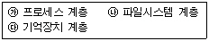
- ①-㉰, ②-㉮, ③-㉯
- ①-㉰, ②-㉯, ③-㉮
- ①-㉮, ②-㉯, ③-㉰
- ①-㉮, ②-㉰, ③-㉯
(정답률: 37%)
67. 페이징 기법에 대한 설명으로 잘못된 것은?
- 페이지(Page)라는 고정 크기 조각 단위로 나누어 할당한다.
- 주기억 공간의 적재단위를 페이지 프레임(Page-Frame)이라고 한다.
- 요구페이징은 모든 페이지가 적재될 공간이 있어야 가능하다.
- 지역성 개념에 따라 페이지 테이블의 일부를 연관기억장치에 유지시킨다.
(정답률: 37%)
68. 교착 상태에 빠진 프로세스들의 자원을 선점해야 되는 경우 고려해야 할 직접적 사항이라고 할 수 없는 것은?
- 자원을 선점할 희생자 프로세스를 선택하는 문제
- 복귀 문제
- 시스템 교체 문제
- 기아 현상 문제
(정답률: 45%)
69. 부디렉토리를 공유할 수 있고, 융통성이 있으며 기억공간을 절약할 수 있으나 복잡하고 하나의 파일에 다수의 이름이 존재할 수 있는 디렉토리 구조는?
- 2단계 디렉토리
- 트리 구조 디렉토리
- 일반 그래프 디렉토리
- 비순환 그래프 디렉토리
(정답률: 33%)
70. 운영체제(Operating System)에 대한 설명으로 거리가 먼 것은?
- 운영체제는 컴퓨터 하드웨어와 사용자간의 매개체 역할을 하는 시스템 프로그램이다.
- 운영체제의 주목적은 컴퓨터 시스템을 편리하게 이용할 수 있게 하는데 있다.
- 운영체제는 컴퓨터 시스템을 공정하고 효율적으로 운영하기 위해 어떻게 자원을 할당할 것인가를 결정한다.
- 운영체제는 컴퓨터 시스템에 항상 존재해야 하며 컴파일러, 문서편집기, 데이터베이스 등의 프로그램을 반드시 포함하고 있어야 한다.
(정답률: 69%)
71. 주기억장치 관리전략 중 배치전략의 방법이 아닌 것은?
- 최적적합
- 최악적합
- 최후적합
- 최초적합
(정답률: 69%)
72. 운영체제에서 프로세스(Process)를 가장 바르게 정의한 것은?
- 프로그래머가 작성한 원시 프로그램이다.
- 컴파일러에 의해 번역된 기계어 프로그램이다.
- 컴퓨터에 의해 실행 중인 프로그램으로 운영체제가 관리하는 최소 단위의 작업이다.
- 응용 프로그램과 시스템 프로그램 모두를 일컫는 용어이다.
(정답률: 75%)
73. 디스크 헤드의 현 위치가 53 트랙에 있다고 가정할 때 SCAN 기법을 사용할 경우 대기 큐의 내용이 다음과 같을 때 처리 순서는 어떻게 되겠는가?
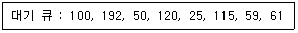
- 53-50-59-61-100-115-120-192-25
- 53-50-25-59-61-100-115-120-192
- 53-59-61-50-25-100-115-120-192
- 53-100-192-50-120-25-115-59-61
(정답률: 41%)
74. 페이지 교체기법 중 시간 오버헤드를 줄이는 기법으로서 참조비트(referenced bit)와 변형비트(modified bit)를 필요로 하는 방법은?
- FIFO
- LRU
- LFU
- NUR
(정답률: 59%)
75. 운영체제의 여러 형태 중 시대적으로 가장 먼저 생겨난 형태는?
- 실시간처리 시스템
- 일괄처리 시스템
- 다중처리 시스템
- 분산처리 시스템
(정답률: 74%)
76. UNIX 시스템에서 이용자와 시스템을 연결해 주는 매체로서 명령문 해석기라고 할 수 있는 것은?
- 커널(kernel)
- 쉘(shell)
- 인터프리터(interpreter)
- 소켓(socket)
(정답률: 75%)
77. 보안 메커니즘의 설계 원칙에는 개방된 설계, 최소 특권, 특권의 분할, 매커니즘의 경제성 등이 있다. 이 중 개방된 설계의 의미를 가장 적절하게 설명한 것은?
- 알고리즘은 알려졌으나, 그 키는 비밀인 암호 시스템의 사용을 의미한다.
- 트로이 목마로부터의 피해를 제한하기 위해 모든 주체는 업무 완수에 필요한 최소한의 특권만을 사용해야 한다.
- 가능하다면 객체에 대한 접근은 하나 이상의 조건을 만족하게 해야 한다.
- 가능한 한 기능 검증과 쉽게 정확한 구현을 할 수 있도록 간단히 설계한다.
(정답률: 55%)
78. UNIX 시스템의 특징으로 볼 수 없는 것은?
- UNIX 시스템은 사용자에 대해 대화형 시스템이다.
- UNIX 시스템은 다중 작업시스템(Multi-tasking System)이다.
- UNIX 시스템의 파일 구조는 단층구조 형태이다.
- UNIX 시스템은 다 사용자(Multi-user) 시스템이다.
(정답률: 74%)
79. 운영체제의 역할로서 거리가 먼 것은?
- 기억 장치 관리
- 처리기 관리
- 입출력 장치 관리
- 응용 프로그램 유지보수
(정답률: 67%)
80. 프로세스 제어블록(PCB)에 포함되지 않는 정보는?
- 프로세스의 우선순위
- 레지스터 내용을 저장하는 장소
- 우선순위를 위한 스케줄러
- 프로세스의 현재 상태
(정답률: 46%)
5과목: 정보통신개론
81. 변조방식 중 ASK 변조란 무슨 변조 방식인가?
- 전송 편이 변조
- 주파수 편이 변조
- 위상 편이 변조
- 진폭 편이 변조
(정답률: 54%)
82. 9600[bps] 의 전송속도를 갖는 모뎀이 4개의 위상을 갖는 QPSK로 변조될 때 변조속도는?
- 4800[baud]
- 2400[baud]
- 1200[baud]
- 600[baud]
(정답률: 31%)
83. 다음 설명 중 틀린 것은?
- IBM의 SNA는 컴퓨터간 접속을 용이하게한 체계화된 네트워크 방식이다.
- 본격적인 데이타통신의 시초는 미국의 반자동 방공 시스템(SAGE)이다.
- 온라인시스템의 대량보급으로 정보통신을 위한 표준화의 필요성이 줄어들었다.
- 데이타전송이란 컴퓨터나 데이타단말에 의해 처리할 또는 처리된 정보의 전송을 말한다.
(정답률: 74%)
84. 다음 중 데이터 회선종단장치와 가장 거리가 먼 것은?
- DCE
- DTE
- MODEM
- DSU
(정답률: 32%)
85. 아날로그 데이터를 전송하기 위해 디지털 형태로 변환하고 또한 디지털 형태를 원래의 아날로그 데이터로 복구시키는 것은?
- DTE
- CODEC
- CCU
- DCE
(정답률: 64%)
86. OSI 7 계층 참조모델 중 데이터 링크 계층의 주요기능에 해당되지 않는 것은?
- 에러검출
- 출력확인
- 오류제어
- 흐름제어
(정답률: 65%)
87. 다음 중 LAN에 대한 설명 중 옳지 않은 것은?
- 광대역 전송매체의 사용으로 고속통신이 가능하다.
- 매우 낮은 오류율을 가지며, 방송 형태의 이용이 가능하다.
- LAN의 구성은 주로 공중망으로 이루어진다.
- 근거리 상호통신을 지원하고 워크스테이션 간을 연결하는데 사용한다.
(정답률: 52%)
88. 통신망의 형태란 통신망 내에 위치한 여러 장치들 사이의 연결 모양을 지칭하는데 다음 중에서 대표적인 통신망 형태가 아닌 것은?
- 스타형(Star)
- 링형(Ring)
- 사각형(Square)
- 버스형(Bus)
(정답률: 68%)
89. 컴퓨터시스템에서 사용되는 필수적인 시스템 소프트웨어로써 컴퓨터의 전반적인 운영과 각종 컴퓨터 자원의 관리를 수행하는 것은?
- OS(Operating System)
- 마스터 화일(Master file)
- 유틸리티(Utility)
- 인터럽트(Interrupt)
(정답률: 77%)
90. 인터넷서비스에 사용되는 통신프로토콜인 TCP/IP는 OSI 참조모델의 어느 계층에 각 각 속하는가?
- 계층2/계층1
- 계층3/계층2
- 계층4/계층3
- 계층5/계층4
(정답률: 59%)
91. 양방향으로 데이터 전송이 가능하나 한 순간에는 한 쪽 방향으로만(한번씩 교대로) 전송이 이루어지는 방식은?
- 단방향방식
- 반이중방식
- 양방향방식
- 전이중방식
(정답률: 81%)
92. 정보통신기술 중 단말기술보다는 전송기술에 주로 해당된다고 보는 것은?
- 멀티미디어
- 개인화
- 고기능화
- 광대역화
(정답률: 74%)
93. 데이터 교환방식에 의한 망의 분류 중 적합하지 않은 것은?
- 회선 교환망
- 무선 교환망
- 패킷 교환망
- 메시지 교환망
(정답률: 54%)
94. 다음 중 정보통신의 필요성과 가장 관계가 적다고 볼 수 있는 것은?
- 정보의 이용율 증가로 노동력 자원화 향상
- 원격지의 정보처리기기 사이의 효율적 정보교환
- 중요한 컴퓨터 자원의 공동 활용
- 정보통신망의 초고속화 및 글로벌화
(정답률: 71%)
95. 정보통신시스템의 구성 요소에 대한 설명으로 거리가 먼 것은?
- CCU, FEP는 통신제어장치이다.
- MODEM은 변ㆍ복조장치이다.
- DTE는 데이터 에러감시장치이다.
- DSU는 신호변환장치이다.
(정답률: 62%)
96. 다음 중 전송 오류의 주 원인이 아닌 것은?
- 신호 감쇄
- 지연 왜곡
- 신호 잡음
- 변조 복조
(정답률: 74%)
97. 전송로 상에 데이터가 흐르고 있지 않은 것을 확인한 후 데이터를 보내는 방식으로 버스(bus)형태의 통신망구조에 적합한 방식은?
- Token Passing 방식
- CSMA/CD 방식
- TDMA 방식
- CDMA 방식
(정답률: 63%)
98. OSI참조 모델에서 각 계층의 기능이 잘못 설명된 것은?
- 프레젠테이션 계층 : 정보의 형식 설정과 코드 변환
- 네트워크 계층 : 정보 교환과 중계 기능
- 응용 계층 : 회화 단위의 제어
- 물리 계층 : 전송 매체로의 전기적 신호 전송
(정답률: 54%)
99. 다음 중 CATV의 주요 구성 요소와 가장 거리가 먼 것은?
- 헤드엔드(HEAD-END)
- 모뎀
- 전송로
- 가입자 단말장치
(정답률: 46%)
100. SDLC 규범에서 한 프레임(Frame)을 구성하는데 필요한 요소가 아닌 것은?
- 플래그(Flag)
- 번지 지정부(Address Field)
- 제어부(control Field)
- 논리 연산부(Arithmetic Logic Unit)
(정답률: 59%)